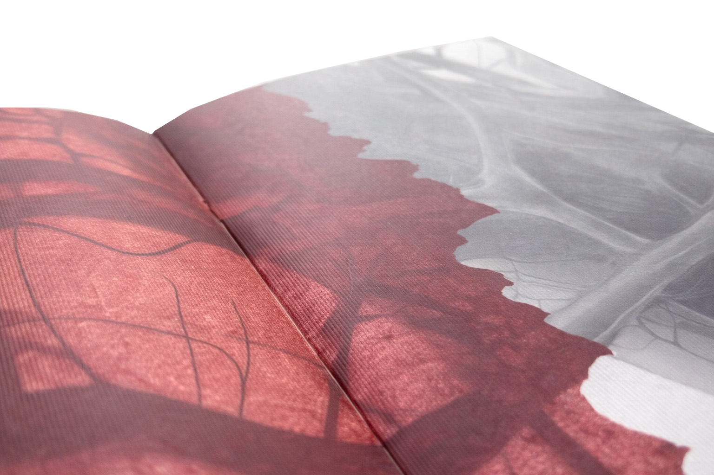

Life/Leaf
Progettazione editorialePer la comunicazione di Terraforma, un festival musicale immerso nella natura, che esplora il legame tra corpo e ambiente; ho progettato una fanzine che traduce visivamente l’anima del festival attraverso una similitudine:
Le venature delle foglie e i capillari umani, strutture diverse ma sorprendentemente simili, simbolo del legame profondo tra uomo e natura.
Immagini organiche e anatomiche si fondono in un linguaggio visivo ibrido, mentre la scelta di carte naturali e della stampa a rilievo trasforma la fanzine in un oggetto sensoriale e materico.
